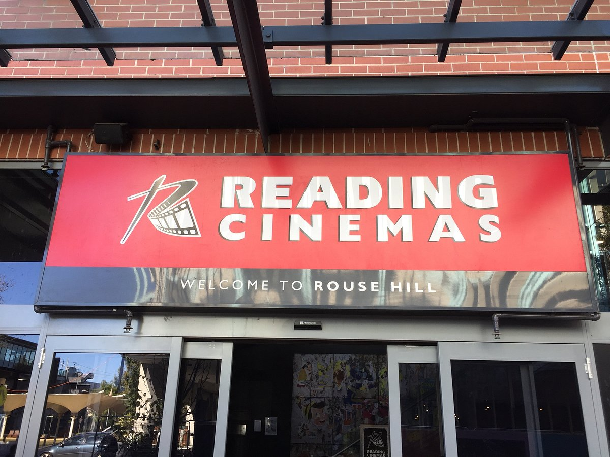
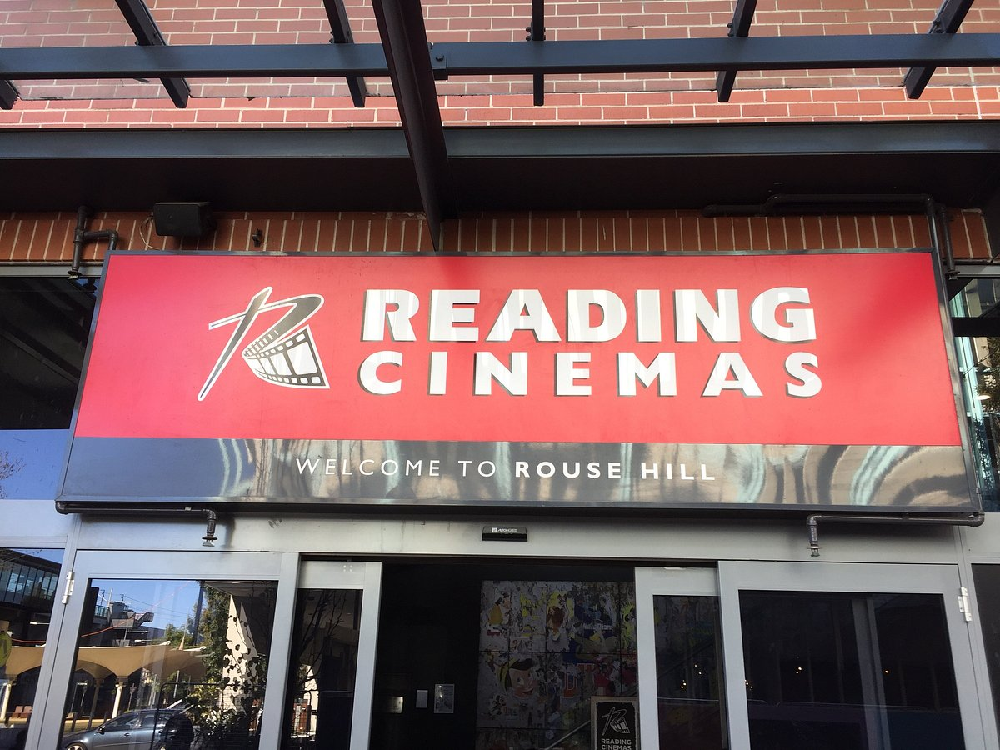

This article will help you find the best places to travel in rouse hill. The information will provide insights on places to explore, eat and enjoy at, examples include, the rouse hill library, reading cinemas and the town center. This page will also give information on each of those respective places.

 

Rouse Hill town center is a great place to visit because of its many shops and great places to eat and relax, the town centers, main attractions include, the water attraction right in front of the library and its open walkways.
The cinemas are a great place to watch movies and experience a blockbuster movie on the big screen, the cinemas are located right next to the rouse hill metro station making it easy to travel from home. But besides that, enjoy the movies.


Rouse Hill library is a great place to sit back and read books, because of its location near the town center, the library is visited by many of the locals, the wide variety of books cover all genres making it suitable for everyone.
Rouse Hill station boosts Rouse Hill’s connectivity with the city, with a train arriving every 5 mins and it being self efficient it is the best way to travel in Sydney. The metro station is also a great place to visit.